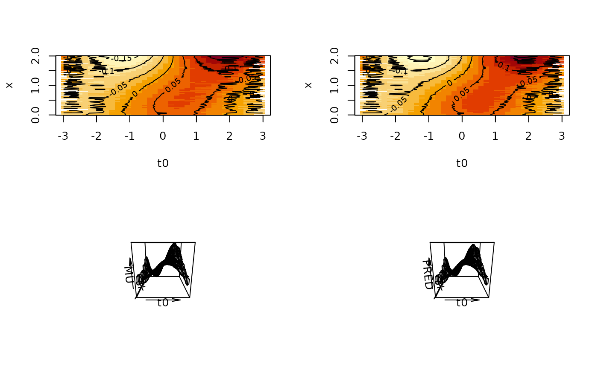
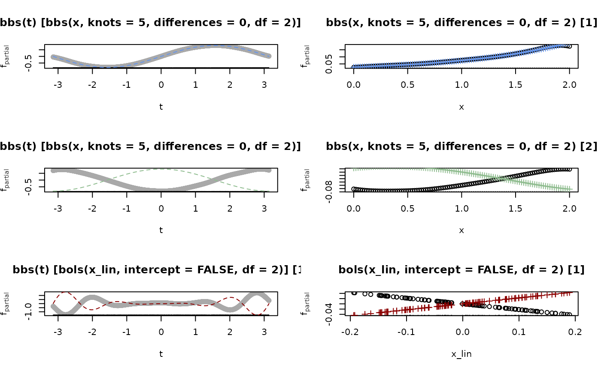
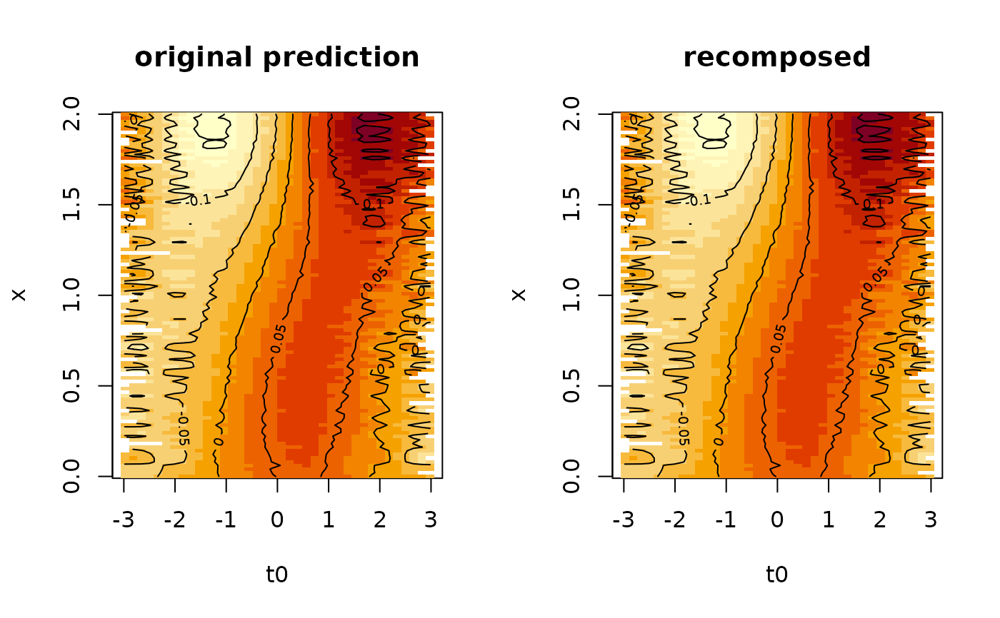
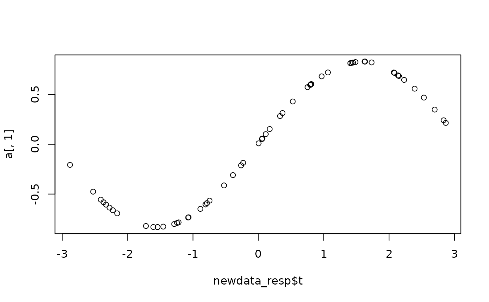
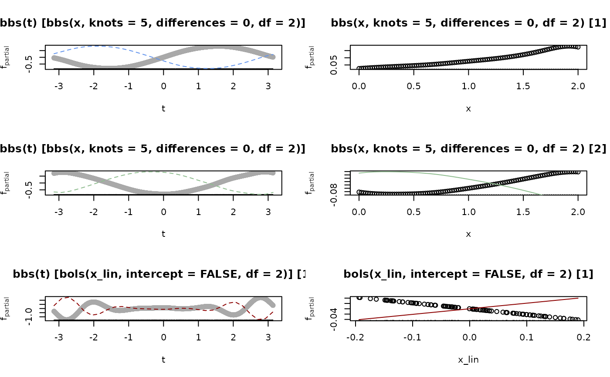
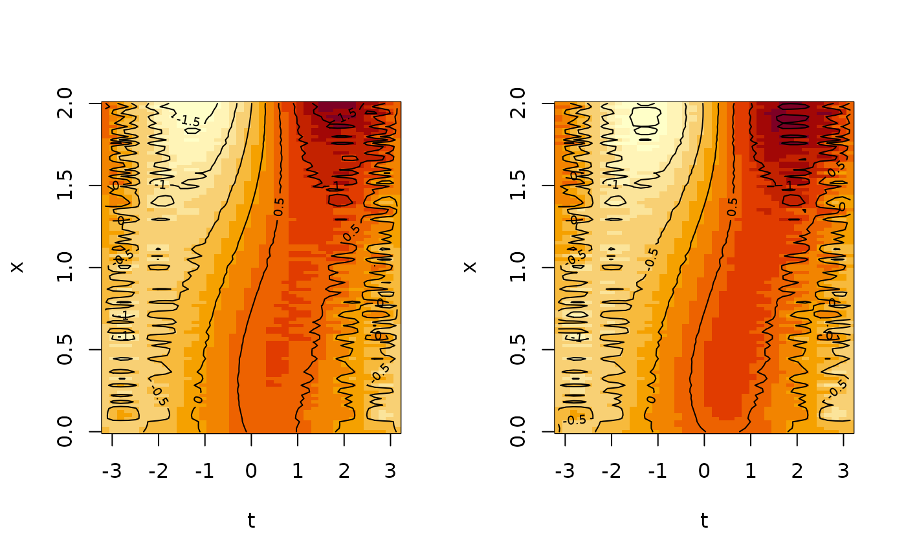
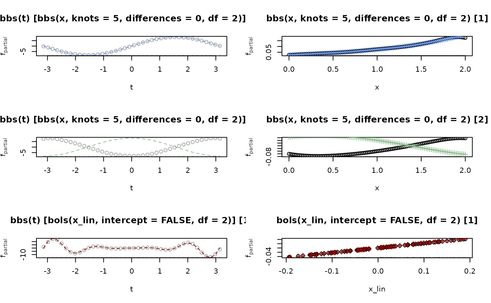
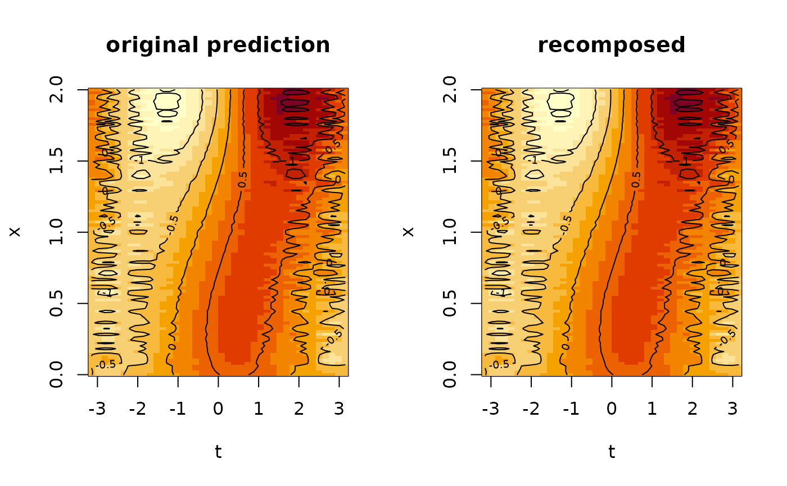
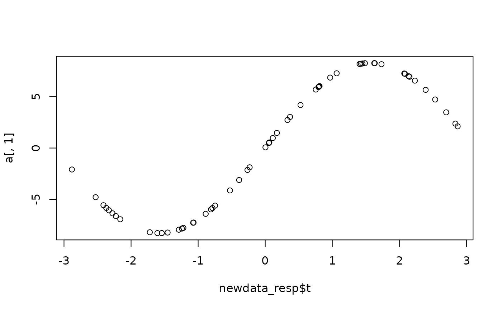

Factorize an FDboost tensor product model into the response and covariate parts $$h_j(x, t) = \sum_{k} v_j^{(k)}(t) h_j^{(k)}(x), j = 1, ..., J,$$ for effect visualization as proposed in Stoecker, Steyer and Greven (2022).
Usage
factorize(x, ...)
# S3 method for class 'FDboost'
factorize(x, newdata = NULL, newweights = 1, blwise = TRUE, ...)Arguments
- x
a model object of class FDboost.
- ...
other arguments passed to methods.
- newdata
new data the factorization is based on. By default (
NULL), the factorization is carried out on the data used for fitting.- newweights
vector of the length of the data or length one, containing new weights used for factorization.
- blwise
logical, should the factorization be carried out base-learner-wise (
TRUE, default) or for the whole model simultaneously.
Value
a list of two mboost models of class FDboost_fac containing basis functions
for response and covariates, respectively, as base-learners.
A factorized model
Details
The mboost infrastructure is used for handling the orthogonal response
directions \(v_j^{(k)}(t)\) in one mboost-object
(with \(k\) running over iteration indices) and the effects into the respective
directions \(h_j^{(k)}(t)\) in another mboost-object,
both of subclass FDboost_fac.
The number of boosting iterations of FDboost_fac-objects cannot be
further increased as in regular mboost-objects.
References
Stoecker, A., Steyer L. and Greven, S. (2022): Functional additive models on manifolds of planar shapes and forms <arXiv:2109.02624>
Examples
library(FDboost)
# generate irregular toy data -------------------------------------------------------
n <- 100
m <- 40
# covariates
x <- seq(0,2,len = n)
# time & id
set.seed(90384)
t <- runif(n = n*m, -pi,pi)
id <- sample(1:n, size = n*m, replace = TRUE)
# generate components
fx <- ft <- list()
fx[[1]] <- exp(x)
d <- numeric(2)
d[1] <- sqrt(c(crossprod(fx[[1]])))
fx[[1]] <- fx[[1]] / d[1]
fx[[2]] <- -5*x^2
fx[[2]] <- fx[[2]] - fx[[1]] * c(crossprod(fx[[1]], fx[[2]])) # orthogonalize fx[[2]]
d[2] <- sqrt(c(crossprod(fx[[2]])))
fx[[2]] <- fx[[2]] / d[2]
ft[[1]] <- sin(t)
ft[[2]] <- cos(t)
ft[[1]] <- ft[[1]] / sqrt(sum(ft[[1]]^2))
ft[[2]] <- ft[[2]] / sqrt(sum(ft[[2]]^2))
mu1 <- d[1] * fx[[1]][id] * ft[[1]]
mu2 <- d[2] * fx[[2]][id] * ft[[2]]
# add linear covariate
ft[[3]] <- t^2 * sin(4*t)
ft[[3]] <- ft[[3]] - ft[[1]] * c(crossprod(ft[[1]], ft[[3]]))
ft[[3]] <- ft[[3]] - ft[[2]] * c(crossprod(ft[[2]], ft[[3]]))
ft[[3]] <- ft[[3]] / sqrt(sum(ft[[3]]^2))
set.seed(9234)
fx[[3]] <- runif(0,3, n = length(x))
fx[[3]] <- fx[[3]] - fx[[1]] * c(crossprod(fx[[1]], fx[[3]]))
fx[[3]] <- fx[[3]] - fx[[2]] * c(crossprod(fx[[2]], fx[[3]]))
d[3] <- sqrt(sum(fx[[3]]^2))
fx[[3]] <- fx[[3]] / d[3]
mu3 <- d[3] * fx[[3]][id] * ft[[3]]
mu <- mu1 + mu2 + mu3
# add some noise
y <- mu + rnorm(length(mu), 0, .01)
# and noise covariate
z <- rnorm(n)
# fit FDboost model -------------------------------------------------------
dat <- list(y = y, x = x, t = t, x_lin = fx[[3]], id = id)
m <- FDboost(y ~ bbs(x, knots = 5, df = 2, differences = 0) +
# bbs(z, knots = 2, df = 2, differences = 0) +
bols(x_lin, intercept = FALSE, df = 2)
, ~ bbs(t),
id = ~ id,
offset = 0, #numInt = "Riemann",
control = boost_control(nu = 1),
data = dat)
MU <- split(mu, id)
PRED <- split(predict(m), id)
Ti <- split(t, id)
t0 <- seq(-pi, pi, length.out = 40)
MU <- do.call(cbind, Map(function(mu, t) approx(t, mu, t0)$y,
MU, Ti))
PRED <- do.call(cbind, Map(function(mu, t) approx(t, mu, t0)$y,
PRED, Ti))
opar <- par(mfrow = c(2,2))
image(t0, x, MU)
contour(t0, x, MU, add = TRUE)
image(t0, x, PRED)
contour(t0, x, PRED, add = TRUE)
persp(t0, x, MU, zlim = range(c(MU, PRED), na.rm = TRUE))
persp(t0, x, PRED, zlim = range(c(MU, PRED), na.rm = TRUE))

par(opar)
# factorize model ---------------------------------------------------------
fac <- factorize(m)
#> Warning: ‘df’ too large:
#> Degrees of freedom cannot be larger than the rank of the design matrix.
#> Unpenalized base-learner with df = 1 used. Re-consider model specification.
vi <- as.data.frame(varimp(fac$cov))
# if(require(lattice))
# barchart(variable ~ reduction, group = blearner, vi, stack = TRUE)
cbind(d^2, sort(vi$reduction, decreasing = TRUE)[1:3])
#> [,1] [,2]
#> [1,] 1354.534 13.4692180
#> [2,] 385.858 3.8573548
#> [3,] 70.049 0.6470387
x_plot <- list(x, x, fx[[3]])
cols <- c("cornflowerblue", "darkseagreen", "darkred")
opar <- par(mfrow = c(3,2))
wch <- c(1,2,10)
for(w in seq_along(wch)) {
plot.mboost(fac$resp, which = wch[w], col = "darkgrey", ask = FALSE,
main = names(fac$resp$baselearner[wch[w]]))
lines(sort(t), ft[[w]][order(t)]*max(d), col = cols[w], lty = 2)
plot(fac$cov, which = wch[w],
main = names(fac$cov$baselearner[wch[w]]))
points(x_plot[[w]], d[w] * fx[[w]] / max(d), col = cols[w], pch = 3)
}

par(opar)
# re-compose predictions
preds <- lapply(fac, predict)
predf <- rowSums(preds$resp * preds$cov[id, ])
PREDf <- split(predf, id)
PREDf <- do.call(cbind, Map(function(mu, t) approx(t, mu, t0)$y,
PREDf, Ti))
opar <- par(mfrow = c(1,2))
image(t0,x, PRED, main = "original prediction")
contour(t0,x, PRED, add = TRUE)
image(t0,x,PREDf, main = "recomposed")
contour(t0,x, PREDf, add = TRUE)

par(opar)
stopifnot(all.equal(PRED, PREDf))
# check out other methods
set.seed(8399)
newdata_resp <- list(t = sort(runif(60, min(t), max(t))))
a <- predict(fac$resp, newdata = newdata_resp, which = 1:5)
plot(newdata_resp$t, a[, 1])

# coef method
cf <- coef(fac$resp, which = 1)
# check factorization on a new dataset ------------------------------------
t_grid <- seq(-pi,pi,len = 30)
x_grid <- seq(0,2,len = 30)
x_lin_grid <- seq(min(dat$x_lin), max(dat$x_lin), len = 30)
# use grid data for factorization
griddata <- expand.grid(
# time
t = t_grid,
# covariates
x = x_grid,
x_lin = 0
)
griddata_lin <- expand.grid(
t = seq(-pi, pi, len = 30),
x = 0,
x_lin = x_lin_grid
)
griddata <- rbind(griddata, griddata_lin)
griddata$id <- as.numeric(factor(paste(griddata$x, griddata$x_lin, sep = ":")))
fac2 <- factorize(m, newdata = griddata)
#> Warning: ‘df’ too large:
#> Degrees of freedom cannot be larger than the rank of the design matrix.
#> Unpenalized base-learner with df = 1 used. Re-consider model specification.
ratio <- -max(abs(predict(fac$resp, which = 1))) / max(abs(predict(fac2$resp, which = 1)))
opar <- par(mfrow = c(3,2))
wch <- c(1,2,10)
for(w in seq_along(wch)) {
plot.mboost(fac$resp, which = wch[w], col = "darkgrey", ask = FALSE,
main = names(fac$resp$baselearner[wch[w]]))
lines(sort(griddata$t),
ratio*predict(fac2$resp, which = wch[w])[order(griddata$t)],
col = cols[w], lty = 2)
plot(fac$cov, which = wch[w],
main = names(fac$cov$baselearner[wch[w]]))
this_x <- fac2$cov$model.frame(which = wch[w])[[1]][[1]]
lines(sort(this_x), 1/ratio*predict(fac2$cov, which = wch[w])[order(this_x)],
col = cols[w], lty = 1)
}

par(opar)
# check predictions
p <- predict(fac2$resp, which = 1)
library(FDboost)
# generate regular toy data --------------------------------------------------
n <- 100
m <- 40
# covariates
x <- seq(0,2,len = n)
# time
t <- seq(-pi,pi,len = m)
# generate components
fx <- ft <- list()
fx[[1]] <- exp(x)
d <- numeric(2)
d[1] <- sqrt(c(crossprod(fx[[1]])))
fx[[1]] <- fx[[1]] / d[1]
fx[[2]] <- -5*x^2
fx[[2]] <- fx[[2]] - fx[[1]] * c(crossprod(fx[[1]], fx[[2]])) # orthogonalize fx[[2]]
d[2] <- sqrt(c(crossprod(fx[[2]])))
fx[[2]] <- fx[[2]] / d[2]
ft[[1]] <- sin(t)
ft[[2]] <- cos(t)
ft[[1]] <- ft[[1]] / sqrt(sum(ft[[1]]^2))
ft[[2]] <- ft[[2]] / sqrt(sum(ft[[2]]^2))
mu1 <- d[1] * fx[[1]] %*% t(ft[[1]])
mu2 <- d[2] * fx[[2]] %*% t(ft[[2]])
# add linear covariate
ft[[3]] <- t^2 * sin(4*t)
ft[[3]] <- ft[[3]] - ft[[1]] * c(crossprod(ft[[1]], ft[[3]]))
ft[[3]] <- ft[[3]] - ft[[2]] * c(crossprod(ft[[2]], ft[[3]]))
ft[[3]] <- ft[[3]] / sqrt(sum(ft[[3]]^2))
set.seed(9234)
fx[[3]] <- runif(0,3, n = length(x))
fx[[3]] <- fx[[3]] - fx[[1]] * c(crossprod(fx[[1]], fx[[3]]))
fx[[3]] <- fx[[3]] - fx[[2]] * c(crossprod(fx[[2]], fx[[3]]))
d[3] <- sqrt(sum(fx[[3]]^2))
fx[[3]] <- fx[[3]] / d[3]
mu3 <- d[3] * fx[[3]] %*% t(ft[[3]])
mu <- mu1 + mu2 + mu3
# add some noise
y <- mu + rnorm(length(mu), 0, .01)
# and noise covariate
z <- rnorm(n)
# fit FDboost model -------------------------------------------------------
dat <- list(y = y, x = x, t = t, x_lin = fx[[3]])
m <- FDboost(y ~ bbs(x, knots = 5, df = 2, differences = 0) +
# bbs(z, knots = 2, df = 2, differences = 0) +
bols(x_lin, intercept = FALSE, df = 2)
, ~ bbs(t), offset = 0,
control = boost_control(nu = 1),
data = dat)
opar <- par(mfrow = c(1,2))
image(t, x, t(mu))
contour(t, x, t(mu), add = TRUE)
image(t, x, t(predict(m)))
contour(t, x, t(predict(m)), add = TRUE)

par(opar)
# factorize model ---------------------------------------------------------
fac <- factorize(m)
#> Warning: ‘df’ too large:
#> Degrees of freedom cannot be larger than the rank of the design matrix.
#> Unpenalized base-learner with df = 1 used. Re-consider model specification.
vi <- as.data.frame(varimp(fac$cov))
# if(require(lattice))
# barchart(variable ~ reduction, group = blearner, vi, stack = TRUE)
cbind(d^2, vi$reduction[c(1:2, 10)])
#> [,1] [,2]
#> [1,] 1354.534 13.4040963
#> [2,] 385.858 3.8236401
#> [3,] 70.049 0.6499127
x_plot <- list(x, x, fx[[3]])
cols <- c("cornflowerblue", "darkseagreen", "darkred")
opar <- par(mfrow = c(3,2))
wch <- c(1,2,10)
for(w in seq_along(wch)) {
plot.mboost(fac$resp, which = wch[w], col = "darkgrey", ask = FALSE,
main = names(fac$resp$baselearner[wch[w]]))
lines(t, ft[[w]]*max(d), col = cols[w], lty = 2)
plot(fac$cov, which = wch[w],
main = names(fac$cov$baselearner[wch[w]]))
points(x_plot[[w]], d[w] * fx[[w]] / max(d), col = cols[w], pch = 3)
}

par(opar)
# re-compose prediction
preds <- lapply(fac, predict)
PREDSf <- array(0, dim = c(nrow(preds$resp),nrow(preds$cov)))
for(i in seq_len(ncol(preds$resp)))
PREDSf <- PREDSf + preds$resp[,i] %*% t(preds$cov[,i])
opar <- par(mfrow = c(1,2))
image(t,x, t(predict(m)), main = "original prediction")
contour(t,x, t(predict(m)), add = TRUE)
image(t,x,PREDSf, main = "recomposed")
contour(t,x, PREDSf, add = TRUE)

par(opar)
# => matches
stopifnot(all.equal(as.numeric(t(predict(m))), as.numeric(PREDSf)))
# check out other methods
set.seed(8399)
newdata_resp <- list(t = sort(runif(60, min(t), max(t))))
a <- predict(fac$resp, newdata = newdata_resp, which = 1:5)
plot(newdata_resp$t, a[, 1])

# coef method
cf <- coef(fac$resp, which = 1)